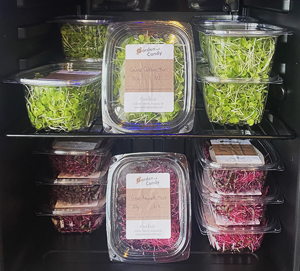

CSA
tl;dr
If you want to eat fresh local lettuce, microgreens, and herbs—and support Plant Lab as part of our neighborhood food system—our CSA greens share is for you! 🌱😎 View the options and sign up below.
why are we doing a CSA?
Community Supported Agriculture is a way for people to partner with local farms on a regular basis. It gives the customer a dependable source of local food and gives the farm a more predictable source of revenue.
Growing greens in a controlled environment requires careful planning and relatively expensive inputs. *Selling* greens is frankly even trickier. For the sake of freshness, shortening the time between harvest and purchase is critical. It's also really hard to grow efficiently for unknown levels of sales. Conventional farms and food distribution channels compensate for this by dramatically overproducing to ensure they can capture enough sales to make money. This results in a huge amount of food waste—by many estimates more that half of greens grown in the US get wasted. By having members commit to a CSA share we are able to plan very accurately for how much to grow each week. Our goal is to operate at near-zero food waste.
what is a greens share?
A greens share (or, as we like to call it, Garden Candy) will generally contain 3 different items: two microgreens and one leaf-lettuce. We'll occasionally include herbs or other extras as we experiment with new things. We offer three share options based on frequency and quantity, see options below.
Pickup is typically Wednesday from 12-6pm
If this doesn't work for you please ask about alternate pickup times! There is also a possbility of delivery; we'll set a fair price based on location.
Cost is based on share frequency (see options below)
If you are interested in a share but the pricing is a challenge for your budget please let us know. At Plant Lab we are more committed to food access than profit and want to operate on a pay-what-you-can model.
what are the share options?
(sign up links will direct you to our Square page)
Greens Share I - $30 monthly
2 microgreens & 1 lettuce, twice per month on 1st and 3rd Wednesdays
Sign Up NowGreens Share II - $56 monthly
2 microgreens & 1 lettuce, every Wednesday
Sign Up NowGreens Share III - $78 monthly
2 microgreens & 2 lettuce, every Wednesday
Sign Up Nowhave more questions?
If you have more questions or need pickup, delivery, or pricing accommodations, email us at info@hollandplantlab.com.
Or if you'd like to talk about the share in person just let us know or stop by on a Wednesday between 12-6 and we'll *usually* be at the Lab.